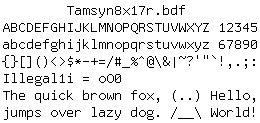
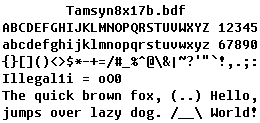
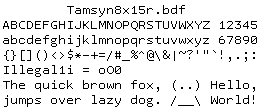
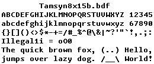
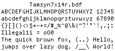
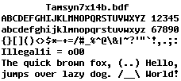
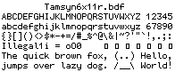
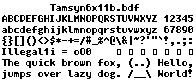

Tamsyn 1.7b programming font review
NOTE: I’ve published my changes to this font as a new Tamzen font.
Tamsyn is the crispest monospace font I’ve ever seen — it doesn’t even need antialiasing! A new 1.7b version was released yesterday with tweaks to existing ASCII characters along with new additions to the Extended Latin characters set.
       
I like the following changes to the ASCII characters set in the new version:
- NUL - drawn as empty square; useful for programming
1- underscore below makes it easier to recognizeS- more streamlined and similar to lowercasesC,G,O, andQ- more roundness, hurray!
However, I dislike the following changes because they detract from the distinct styling of Tamsyn; particularly the uniform roundness of its characters:
l- roundness is gone; it reminds me of Courier :(y- less round; too different from the roundgw- roundness is gone; too sharp and jagged
Though I’m neutral about the following changes and will give them a chance:
t- small loss of roundness and more centered nowf- less round and the horizontal stroke is higherj- less round in the descender stroke